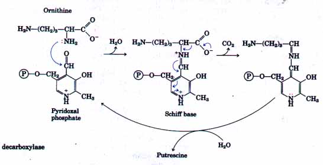
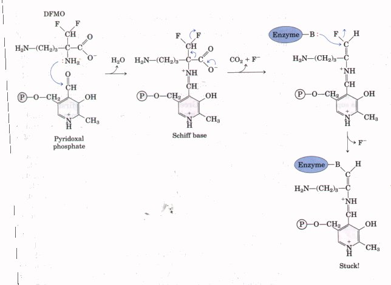
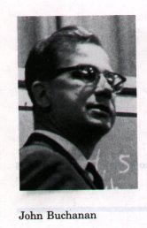
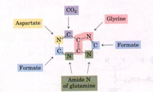
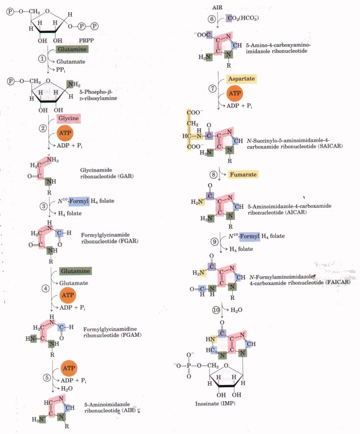
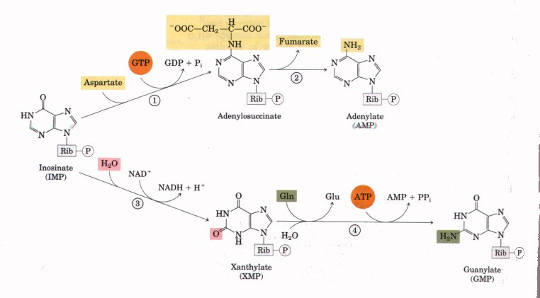

As discussed in Chapter 12, nucleotides play a variety of important roles in all cells. First, they are precursors of DNA and RNA. Second, ATP and to some extent GTP are essential carriers of chemical energy. Third, nucleotides are components of the cofactors NAD, FAD, Sadenosylmethionine, and coenzyme A, as well as of activated biosynthetic intermediates such as UDP-glucose and CDP-diacylglycerol. Some, such as cAMP and cGMP, are also cellular second messengers.
There are two types of pathways leading to nucleotides: the de novo pathways and the salvage pathways. De novo synthesis of nucleotides begins with their metabolic precursors: amino acids, ribose-5-phosphate, CO2, and NH3. Salvage pathways recycle the free bases and nucleosides released from nucleic acid breakdown. Both types of pathways are important in cellular metabolism.
The de novo pathways for purine and pyrimidine biosynthesis appear to be present in identical form in nearly all living organisms. Notably, the free bases guanine, adenine, thymine, cytidine, and uracil are not intermediates in these pathways; that is, the bases are not synthesized and then attached to ribose, as might be expected. The purine ring structure is built up one or a few atoms at a time, attached to the ribose throughout the process. The pyrimidine ring is synthesized as orotate, attached to ribose phosphate, and then converted into the common pyrimidine nucleotides used in nucleic acid synthesis.
Although the tree bases are not intermediates in the de novo pathways, they are intermediates in some of the salvage pathways.
Several important precursors are shared by the de novo pathways for pyrimidines and purines. PRPP is important in both, and here the structure of ribose is retained in the product nucleotide, in contrast to its fate in the tryptophan and histidine pathways discussed earlier. An amino acid is an important precursor in each pathway: glycine in the case of purines and aspartate for pyrimidines. Glutamine again is the most important source of amino groups, playing this role in five different steps in these pathways. Aspartate is also used twice in the purine pathways as the source of an amino group.
Two other features deserve mention. First, there is evidence, especially in the purine pathway, that the enzymes used are present as large, multienzyme complexes in the cell, a recurring theme in our discussion of metabolism. Second, the pools of nucleotides in cells (exclusive of ATP) are quite small, perhaps 1% or less of the amounts required to synthesize the cellular DNA. Therefore, nucleotide synthesis must continue during nucleic acid synthesis and in some cases may limit the rates of DNA replication and transcription. The importance of these processes in dividing cells has made agents that inhibit nucleotide synthesis particularly important to modern medicine.
We examine here the biosynthetic pathways of purine and pyrimidine nucleotides and their regulation, the formation of the deoxynucleotides, and the degradation of purines and pyrimidines to uric acid and urea. We end with a discussion of chemotherapeutic agents that affect nucleotide synthesis.
BOX 21-1
|
 |
Figure 2 Mechanism of ornithine decarboxylase reaction . |
The first few steps of the normal reaction catalyzed by ornithine decarboxylase, as determined experimentally, are shown in Figure 2. The direction of flow of electron pairs is denoted by blue arrows. Once CO2 is released, the electron movement is reversed and putrescine is ultimately released (see Fig. 21-25). Based on this mechanism, several suicide inhibitors have been designed for this enzyme. One of these is difluoromethylornithine (DFMO). DFMO is relatively inert in solution. When it binds to ornithine decarboxylase, however, the enzyme is quickly inactivated (Fig. 3).

This inhibitor provides an alternative electron sink in the
form of two strategically placed fluorine atoms, which are
excellent leaving groups. Instead of electrons moving into the
ring structure of PLP, the reaction results in displacement of a
fluorine atom. Nucleophilic amino acid side chains (represented
by B : ) at the enzyme's active site may then react with the
highly reactive PLP-inhibitor adduct, forming a covalent complex
in an essentially irreversible reaction. In this way the
inhibitor makes use of the enzyme's own reaction mechanisms to
kill it. DFMO has proven highly effective against African
sleeping sickness in clinical trials in Africa.
Approaches such as this show great promise for treating a wide
range of diseases. The ability to design drugs based on enzyme
mechanism and structure is replacing the more traditional
trialand-error method for producing new drugs.
 The two parent purine nucleotides of nucleic acids are adenosine 5'monophosphate (AMP; adenylate) and guanosine 5'-monophosphate (GMP; guanylate). These nucleotides contain the purine bases adenine and guanine, respectively. Figure 21-26 shows the origin of the carbon and nitrogen atoms of the purine ring system, as determined by John Buchanan using isotopic tracer experiments in birds. The detailed pathway of purine biosynthesis was worked out primarily by Buchanan and G. Robert Greenberg in the 1950s. In the first committed step of the pathway, an amino group donated by glutamine is attached at C-1 of PRPP (Fig. 21-27). The resulting 5-phosphoribosylamine is highly unstable, with a half life of 30 s at pH 7.5. The purine ring is subsequently built up on this structure. |
 Figure 21-26 Origin of the ring atoms of purines, determined from isotopic experiments with 14C- or l5N-labeled precursors. The formate is supplied in the form of N10-formyltetrahydrofolate. |

Figure 21-27 Steps in the construction of the purine ring of inosinate. Each addition to the purine ring is shaded to match Fig. 21-26. After step 2, R symbolizes the 5-phospho-D-ribosyl group on which the purine ring is built Formation of 5-phosphoribosylamine (step l ) is the first committed step in purine synthesis. Note that the product of step 8 is 5-aminoimidazole-4-carboxamide ribonucleotide (AICAR), the remnant of ATP that is released during histidine biosynthesis (see Fig. 21-17, step 5). Abbreviations are given for most intermediates to simplify the naming of the pathway enzymes. The enzymes are: l : glutaminePRPP amidotransferase , 2 : GAR synthetase, 3 : GAR transformylase, 4 : FGAR amidotransferase, 5 : FGAM cyclase (AIR synthetase), 6 : AIR carbcylase , 7 : SAICAR synthetase, 8 : SAICAR lyase, 9 : AICAR transformylase, and 10 IMP synthase.
The next step is the addition of three atoms from the amino acid glycine (Fig. 21-27, step 2 ). An ATP is consumed to activate the carboxyl group of glycine (in the form of an acyl phosphate) for this condensation reaction. The added glycine amino group is then formylated by Nl0-formyltetrahydrofolate (step 3 ), and a nitrogen is contributed by glutamine (step 4), before dehydration and ring closure yield the five-membered imidazole ring of the purine nucleus, as 5-aminoimidazole ribonucleotide (step 5).
At this point, three of the six atoms needed for the second ring in the purine structure are in place. To complete the process, a carboxyl group is first added (step 6). This carboxylation is unusual in that it does not require biotin, but instead uses the bicarbonate generally present in aqueous solutions. Aspartate then donates its amino group to the imidazole ring in two steps (7 and 8) : formation of an amide bond is followed by elimination of the carbon skeleton of aspartate (as fumarate). Recall that aspartate plays an analogous role in two steps of the urea cycle (see Fig. 17-11). The final carbon is contributed by Nloformyltetrahydrofolate (step 9 ), and a second ring closure takes place to yield the second of the two fused rings of the purine nucleus (step 10 ). The first intermediate to have a complete purine ring is inosinate (IMP).
As in the tryptophan and histidine biosynthetic pathways, the enzymes in the pathway leading to IMP appear to exist as large multienzyme complexes in the cell. Once again, evidence comes from the existence of single polypeptides with several functions, some of which catalyze several nonsequential steps in the pathway. In eukaryotic cells ranging from yeast to fruit flies to chickens, steps 2, 3, and 5 in Figure 21-27 are catalyzed by such a multifunctional protein. Additional multifunctional proteins catalyze steps 6 and 7 and steps 9 and 10. In bacteria, these activities are found on separate proteins, but a large noncovalent complex may exist there as well. The channeling of reaction intermediates from one enzyme to the next permitted by these complexes is probably especially important in the case of unstable intermediates such as 5-phosphoribosylamine.
The conversion of inosinate to adenylate (Fig. 21-28) requires the insertion of an amino group derived from aspartate; this takes place by a series of two reactions similar to those used to introduce N-1 of the purine ring (Fig. 21-27, steps 7 and 8. A key difference is that GTP is used in place of ATP as the source of the high-energy phosphate in synthesizing adenylosuccinate. Guanylate is formed by the oxidation of inosinate at C-2 using NAD+, followed by the addition of an amino group derived from glutamine. ATP is cleaved to AMP and PPi in the final step (Fig. 21-28).

Figure 21-28 Synthesis of AMP and GMP from IMP. The enzymes are: l. adenylosuccinate synthetase, 2. adenylosuccinate lyase, 3. IMP dehydrogenase, and 4. XMP-glutamine amidotransferase.